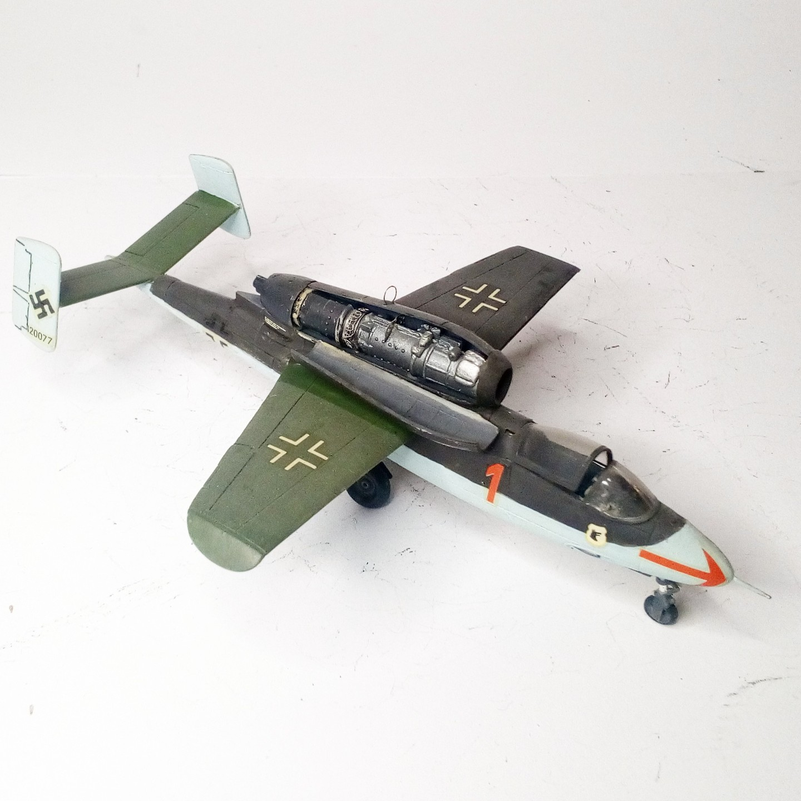
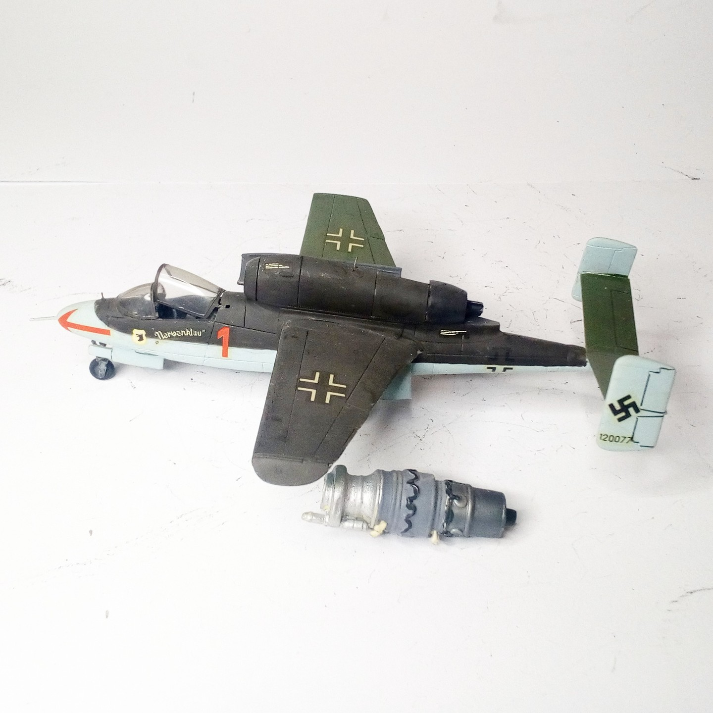

Aerei · scale model archive
Heinkel He162 A
Heinkel He162 A — Kit: Dragon, Scale: 1/72. Flown by Emil Demuth 3/JG1, Leck May 1945 #1/72 #Dragon #He162

Photo gallery

English description
Flown by Emil Demuth 3/JG1, Leck May 1945
#1/72 #Dragon #He162
Descrizione italiana
Pilotato da Emil Demuth, 3/JG1, Leck, maggio 1945.